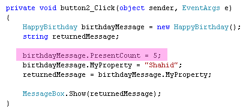
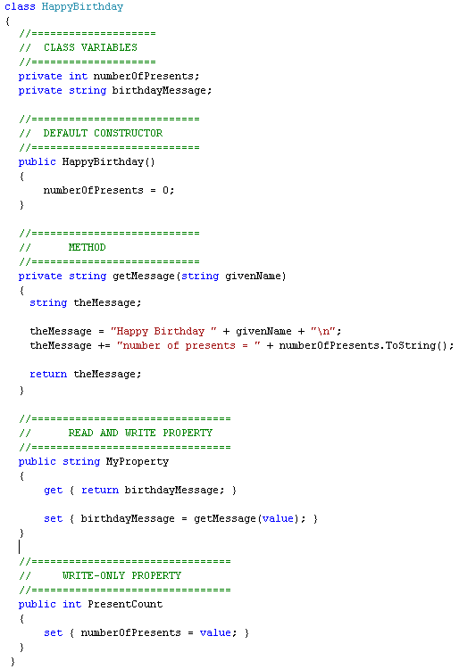
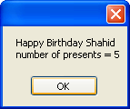
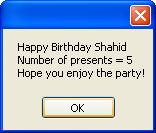
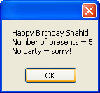

Class Constructors in C# .NET
<< Part of an ongoing lesson - first part is here >>
Quite often, you'll want to set some default values for the variables you've set up in your class. This is where the Class Constructor comes in handy.
Suppose we want to add a new property to our class, the number of presents a person receives on their birthday. We can set up a new variable in our HappyBirthday class:
private int numberOfPresents;
This integer variable (a field) has no value at the moment. We can use a Constructor to set one.
A Constructor is used to set up values for your variables. When your object is created, C# looks for this Constructor and tries to set those values. If you don't add one yourself, C# automatically adds one for you. Even if you have no variables to set!
The Constructor takes the same name as your class. For us, the default Constructor will be called HappyBirthday, and would look like this:
public HappyBirthday()
{
}
Note that Constructor is public, but that it has no return type like int, string, float, etc. That's because Constructors don't return values - they just get on with setting up values for your variables.
A default Constructor has nothing between the round brackets after its name. If you set up your own default Constructor, rather than letting C# do it for you, then leave the round brackets empty. (You can also do something called Constructor Overloading, but that's outside the scope of this book. But this is where you pass values over to your Constructor.)
To set a value for our numberOfPresents variable, we just do normal variable assignment:
public HappyBirthday()
{
numberOfPresents = 0;
}
Now, when the object is created, C# will fill our numberOfPresents variable with a default value we have chosen.
Let's put the numberOfPresents variable to some use.
Add the following property to your class:
public int PresentCount
{
set { numberOfPresents = value; }
}
The property is write-only, meaning we are only setting a value, not getting one out. But it will set a value for the numberOfPresents variable.
Your getMessage Method can be amended slightly, too. Change it to this:
private string getMessage(string givenName) {
string theMessage;
theMessage = "Happy Birthday " + givenName + "\n";
theMessage += "Number of presents = " + numberOfPresents.ToString();
return theMessage;
}
All we're doing is setting up a string variable called theMessage. We're then building up the string with the givenName and the numberOfPresents. Note the use of the C# new line character, "\n".
In your button code, you can now set a value for your new property:
birthdayMessage.PresentCount = 5;
The coding window for your button should then look like this:

The new property use has been highlighted. We're passing a value of 5 over to the PresentCount property we set up.
Here's what your HappyBirthday class should look like. We've added a few comments.

Run your programme and click your button. The message that displays should look like this:

Exercise O
Set up a new property to record whether a person is having a birthday party
or not. Add a default value of false to your constructor. Adapt your message
accordingly. When you use your new property from the button code, pass over
a value of true.
If you successfully complete this exercise, your message box may look something like this if they are having a party:

And like this if they are not:

To get different messages, you will have to add an if statement to your Method.
This is a tricky exercise. So give yourself a pat on the back, if you complete it!
In the next lesson, we'll take a look at Inheritance.